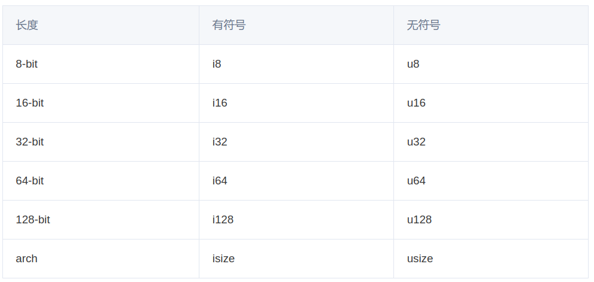

文章标题
引言
引言内容。
文章目录
0×1.
。。。
fn main() {
let x:i8=5;
if x<3 {
println!("x<3");
} else if x>8 {
println!("x>8");
} else if x==5 {
println!("x = {}", x);
} else {
println!("hk987.fun");
}
}
cd ~/.ssh
ll
总用量 24
drwx------ 2 987 987 4096 6月 8 20:54 ./
drwxr-x--- 23 987 987 4096 6月 12 07:23 ../
-rw------- 1 987 987 2610 6月 8 20:20 id_rsa
-rw-r--r-- 1 987 987 574 6月 8 20:20 id_rsa.pub
-rw------- 1 987 987 806 6月 8 20:54 known_hosts
-rw-r--r-- 1 987 987 142 6月 8 20:54 known_hosts.old
pwd
/home/hackmm
Foresee/
├── Media/
| ├── Horizon.mp3
| ├── Info.mp4
| └── logo.svg
| ├── document.docx
| └── presentation.ppt
| ├── data.xls
├── .gitignore
├── style.css
├── archive.zip
├── archive.rar
├── index.html
├── README.md
#include <stdio.h>
- int main()
+ {
+ printf("C programme\n");
return 0;
}

0×2.
★ 。。。
● 。。。
0×3.
。。。